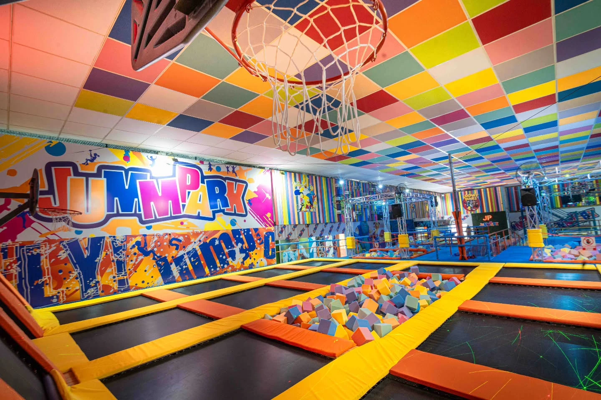
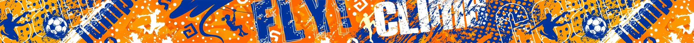
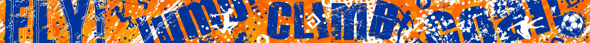

PROYECTO 03 / ENTRETENIMIENTO · GRÁFICA AMBIENTAL
JUMMPARK.
Diseño que ocupa el espacio.
Una intervención gráfica que atraviesa el parque: murales, sectores temáticos, aplicaciones de marca y piezas comerciales.

EL DISEÑO
SE HACE REAL.
El valor de esta pieza no está solo en cómo se ve en pantalla, sino en cómo se integra en la arquitectura y el recorrido del lugar.
Los materiales corresponden al mismo proyecto, pero no son fotografías tomadas desde el mismo encuadre. La comparación documenta diseño y aplicación, no un montaje fotográfico exacto.
DEL PLANO A
GRAN ESCALA.
Las bandas originales se diseñaron como composiciones continuas. Al instalarse, acompañan el recorrido visual de los juegos.


CADA SECTOR,
UN ESCENARIO.
La gráfica se adapta a distintas situaciones: muros deportivos, espacios de juego y ambientaciones temáticas.
DISEÑAR TAMBIÉN
ES RESOLVER.
El portfolio muestra tanto el resultado final como la preparación de piezas para su aplicación: gráficos y guías de corte.
LA MARCA
SIGUE JUGANDO.
Ajustes del logo existente y piezas destinadas a distintos soportes. Este material complementa el caso principal sin competir con él.
COMUNICACIÓN COMERCIALCarta de combos · 2 piezas
GRÁFICA TEMÁTICACuatro piezas deportivas
JUMMPARK / GRÁFICA AMBIENTAL
UNA MARCA.
UN PARQUE ENTERO.
Diseño preparado para convivir con la arquitectura, el movimiento y la experiencia del visitante.
VOLVER A LOS PROYECTOS